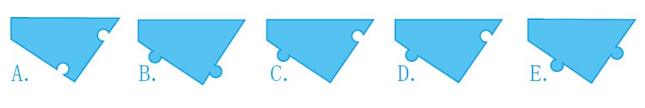
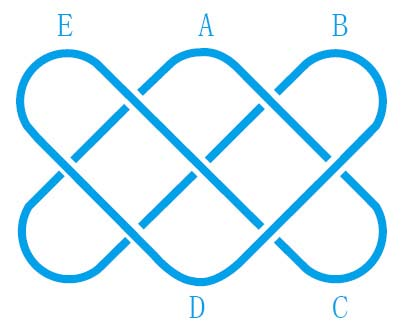
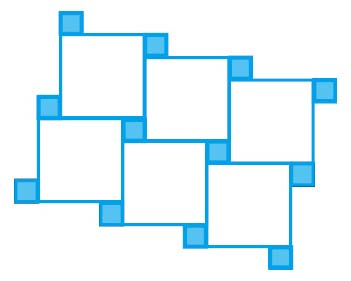

暖身趣味十题
你连12岁的孩子都不如吗？
游戏规则：不得使用计算器！
（1）下面有5块拼图板，用其中4块可以拼成一个矩形。请问，哪一块是多余的？

（2）把下列分数按照由小到大的次序排列，排在中间的是哪一个？
A. B. C. D. E.
（3）
This sentence contains the letter e _____ times（字母e在这句话里出现了___次）
seven（7）eight（8）nine（9）ten（10）eleven（11）
上面给出的5个单词中，有几个单词填入上面的空格，可以使句子成立？
A. 0 B. 1 C. 2 D. 3 E. 4
（4）下图是居住在非洲中西部班图人居住区的乔克维人（Tchokwe）画的沙画（Lusona）。整个图案是用一根木棒在沙地里一笔画成的，起点与终点重合，绘画过程中木棒没有离开沙地。请问，起点可能是哪个位置？（在线条相交的地方，线条断开表示这个部分是先画的，没有断开的线条覆盖在断开的线条之上。）

（5）下列哪个算式的得数可以被从1至10（含）的所有整数整除？
A. 23×34 B. 34×45 C. 45×56 D. 56×67 E. 67×78
（6）
红桃K说：“果馅饼是我偷的。”
梅花K说：“红桃K在说谎。”
方块K说：“梅花K在说谎。”
黑桃K说：“方块K在说谎。”
4个人中有几个人在说谎？
A. 1 B. 2 C. 3 D. 4 E. 信息不足，无法判断
（7）给一个立方体上色，有公共边的两个面必须为不同颜色，请问最少需要多少种颜色？
A. 2 B. 3 C. 4 D. 5 E. 6
（8）祖母坚信自己越活越年轻，因为根据计算，她的年龄是我的4倍，但是5年前，她的年龄是我的5倍。我和祖母现在的年龄之和是多少？
A. 95 B. 100 C. 105 D. 110 E. 115
（9）把下面的□换成+或者-，使最终得数为100。
123 □ 45 □ 67 □ 89
设+号的个数是p，-号的个数是m，则p-m等于多少？
A. -3 B. -1 C. 0 D. 1 E. 3
（10）下面的图案是用两种大小的正方形瓷砖拼成的，一种瓷砖的边长是1，另一种的边长是4。现在，在一个非常大的房间里，用这两种瓷砖铺成大量这样的图案，需要使用的绿色瓷砖与白色瓷砖的块数之比与下面哪个答案最接近？

A. 1∶1 B. 4∶3 C. 3∶2 D. 2∶1 E. 4∶1